Aflevering RSG3-rijtuigen vordert gestaag en meer...
- maandag 19 januari 2009 14:09
- Geschreven door Tristan
De aflevering van de RSG3-rijtuigen voor de RandstadRail Erasmuslijn vordert gestaag. De stand van zaken: op 5 december 2008 werd rijtuig 5510 afgeleverd, gevolgd door rijtuig 5509 op 17 december. Op 9 januari 2009 werden de rijtuigen 5511 en 5512 afgeleverd. Alle rijtuigen worden afgeleverd bij de remise Waalhaven.
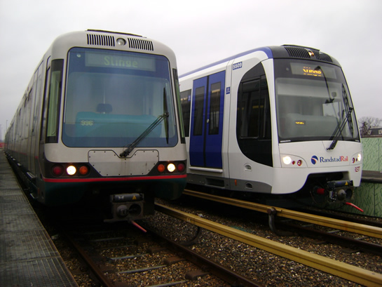
Rijtuig 5402 naast rijtuig 5509 op het emplacement van de remise 's-Gravenweg.
Op 28 november werden de rijtuigen 5501 en 5502 na een beproevingsperiode op de RandstadRail Erasmuslijn teruggebracht bij de lijnwerkplaats Waalhaven. Vervolgens werden de twee rijtuigen op 8 december teruggestuurd naar de fabriek van Bombardier Transportation in Bautzen. De rijtuigen 5503 en 5504 werden op 13 november naar Leidschendam gebracht, maar keerden op 22 december terug naar de lijnwerkplaats Waalhaven. Op 7 januari werden de rijtuigen 5505 en 5508 overgebracht naar de Nedtrain-werkplaats in Leidschendam, een week later was het de beurt aan de rijtuigen 5506 en 5510, op 15 januari. De vier laatst genoemde rijtuigen verblijven daar nu nog steeds.
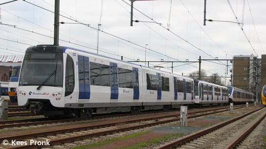
De RSG3-rijtuigen 5504 en 5503 op het terrein van Nedtrain-werkplaats Leidschendam, daags voor vertrek naar Rotterdam.
Overdag vinden op het Rotterdamse metronet nog steeds ritten plaats voor de ingebruikname van de nieuwe rijtuigen. Ook zijn er trainingen voor metropersoneel. Overdag worden er proefritten gemaakt op de RandstadRail Erasmuslijn met het nieuwe materieel. Daarbij worden ook snelheidsproeven gedaan bij snelheden tot 100 km/h.
Op 2 december werd de eerste RSG3 in de reizigersdienst ingezet (rijtuigen 5505 en 5507), op wagendienst 916 tussen Centraal Station, Slinge en Spijkenisse (Erasmuslijn). Passagiers reageren positief op de komst van de nieuwe rijtuigen. Met ingang van de nieuwe dienstregeling per 14 december wordt de combinatie RSG3-rijtuigen ingezet op wagendienst 915.
Officiële opening Berkel Westpolder
Morgen opent wethouder Verkeer & Vervoer Jeanette Baljeu het nieuwe station Berkel-Westpolder. De metro's halteren al enige tijd op het station, morgen wordt het officieel geopend. Naar verluid wordt er een RSG3-rijtuig ingezet. De openinghandeling begint om 18.30 uur bij station Berkel-Westpolder.
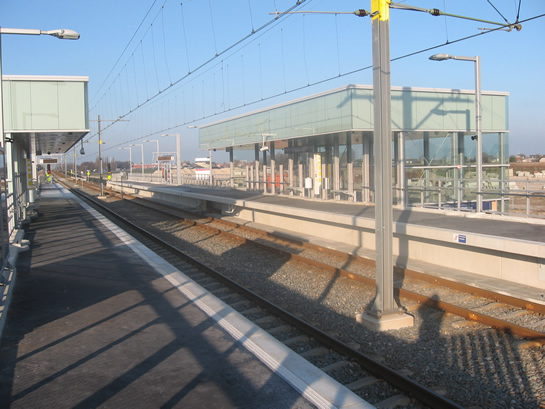
De overkapping doet denken aan station Hoogvliet.
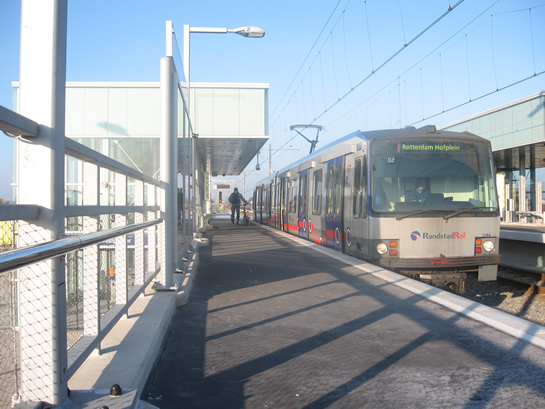
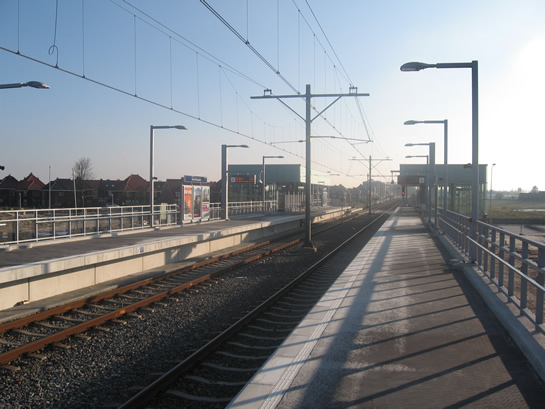
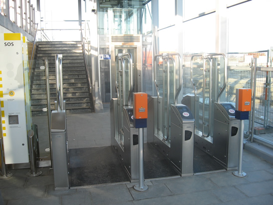
Het station is al voorzien van toegangspoortjes.
5300-serie
Voor de D-beurt (grote technische revisie) van de 5300-serie is inmiddels rijtuig 5320 afgeleverd bij de Centrale Werkplaats. Dat gebeurde afgelopen donderdag. De revisie van rijtuig 5304 werd afgerond en zodoende werd dit rijtuig mee terug genomen naar de lijnwerkplaats Waalhaven door vervoerder RRF. Bij aankomst bleek dat het aansluitingsspoor opgebroken was, waardoor rijtuig 5304 niet overgebracht kon worden naar het emplacement. Afgelopen zaterdagmorgen is het rijtuig dan ook weer opgehaald door RRF en teruggebracht bij de Centrale Werkplaats Kleiweg.
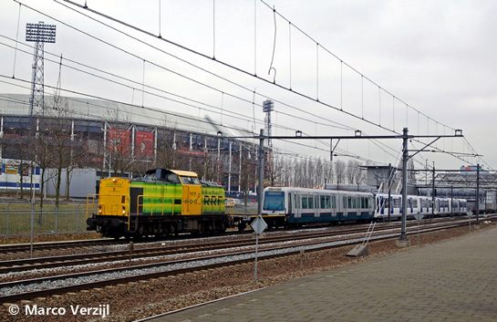
Afgelopen donderdag bracht RRF eerst de rijtuigen 5506 en 5510 naar Leidschendam en nam daarbij rijtuig 5320 mee. Op de terugweg werd het rijtuig pas afgeleverd bij de Centrale Werkplaats Kleiweg. Na aflevering werd rijtuig 5304 mee retour genomen naar de remise Waalhaven.
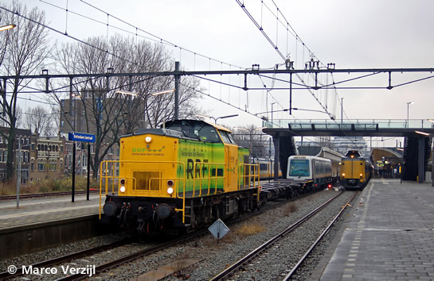
Rijtuig 5304 op transport naar de Centrale Werkplaats Kleiweg, 11 december 2008. Rijtuig 5324 werd vervolgens mee retour genomen naar de remise Waalhaven.
29 januari: invoering OV-chipkaart in de metro
Op 29 januari wordt de OV-chipkaart officieel ingevoerd in de Rotterdamse metro. Op 1 januari werden hiertoe al alle strippenkaartautomaten op de metrostations uitgeschakeld. Ook toegangspoortjes worden gefaseerd gesloten. De wachttijden bij de Verkoop- & Informatiepunten kunnen door de vraag naar de OV-chipkaart behoorlijk oplopen. Er zijn daarom extra medewerkers ingehuurd die zoveel mogelijk vragen beantwoorden en passagiers assisteren bij het kopen van een kaart uit een verkoopautomaat. RET zet op en rond 29 januari meer extra personeel in.
Bovenleidingproblemen
Op de avond van 30 december raakte, vermoedelijk als gevolg van de kou, de bovenleiding ernstig beschadigd op het traject Capelsebrug - Schenkel (spoor 2). Er moest daarom geruime tijd enkelspoor gereden worden via spoor 1 tussen de wisselcomplexen Prinsenlaan en Capelsebrug II v.v. Ook werden er op sommige momenten bussen ingezet. Schadeherstel nam nog een groot deel van Oudejaarsdag in beslag. De betrokken rijtuigen, die allemaal hun pantografen verspilden, waren 5222, 5231 en 5235.
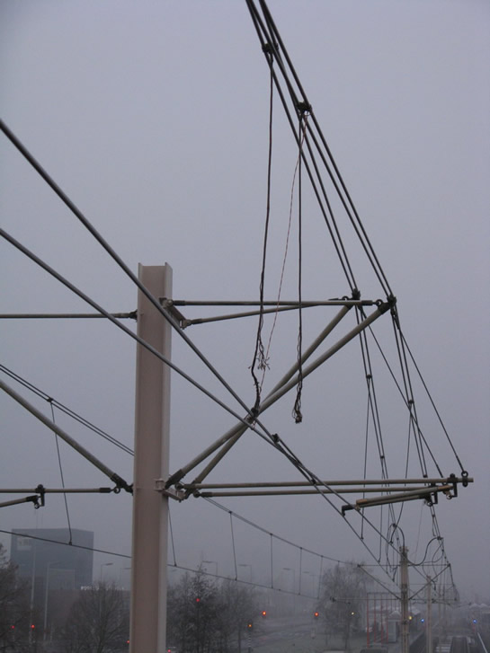
Een groot aantal hangdraden raakte beschadigd.
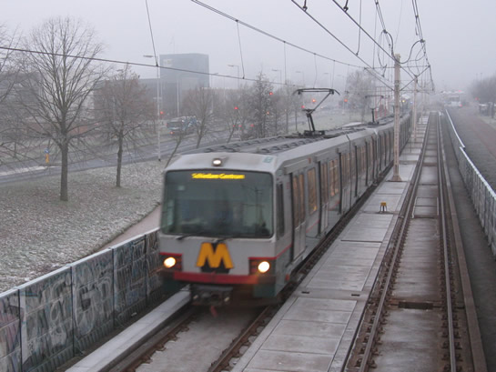
Terwijl de bovenleiding hersteld wordt, passeert het metroverkeer over het andere spoor.
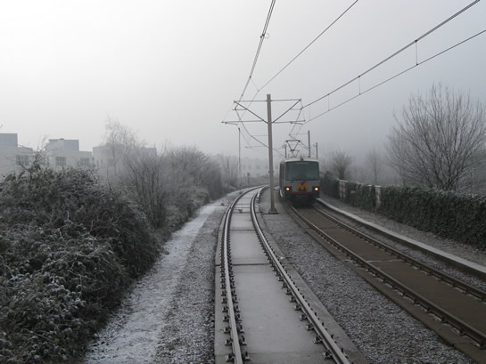
Herstel van de bovenleiding nabij station Capelsebrug.
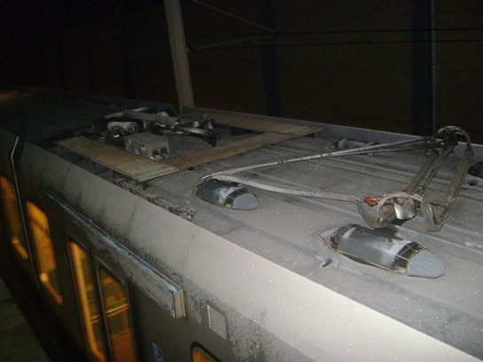
Eén van de beschadigde pantografen.
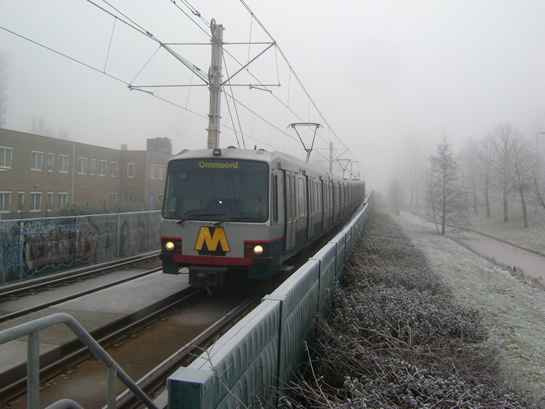
Enkelspoorbedrijf via spoor 1, station Schenkel.
Ongeval Alexander
Door een ongeval op NS-station Alexander op Nieuwjaarsmorgen, was er enige tijd geen metroverkeer mogelijk rond metrostation Alexander. De politie voerde sporenonderzoek uit.
5415
Rijtuig 5415 kreeg in de afgelopen periode tot drie keer toe te maken met rookverschijnselen, waarbij de brandweer uitrukte met groot materieel. Op 17 december strandde het rijtuig net buiten station Capelsebrug (1-zijde) door kortsluiting veroorzaakt door pekelvorming bij de stroomafnemer. Op 8 januari werd het rijtuig opnieuw getroffen door rookverschijnselen bij een stroomafnemer. Het metrorijtuig stond toen in station Capelsebrug (perronspoor 1). Op 12 januari werd het metrorijtuig vervolgens wederom getroffen door rookverschijnselen, dit keer op station Kralingse Zoom. In alle gevallen onstond vertraging doordat het metroverkeer ter plaatse omgeleid moest worden.
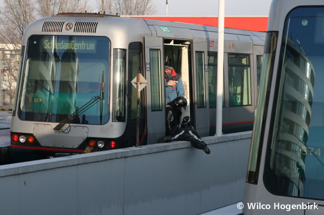
De brandweer in actie bij rijtuig 5415 op station Capelsebrug, 8 januari jl.
Poortugaal
In de avond van 3 januari jl. werd het metroverkeer rond station Tussenwater enige tijd stilgelegd omdat een man zonder vaste woon- of verblijfplaats dreigde het metrospoor op te blazen. Het metroverkeer van de Caland- en Erasmuslijn liep vertraging op. Er werden geen explosieven aangetroffen.
Nieuwe dienstregeling
Op 14 december ging de nieuwe jaardienstregeling in. Voor de metro bracht dit geen grote veranderingen met zich mee. Nieuw is de invoering van het zogenaamde FrequentNet: alle metro- en tramlijnen en rode buslijnen, die van 's ochtends vroeg tot 's avonds laat in een hoge frequentie rijden. Van maandag tot en met vrijdag tussen 7.00 uur en 19.00 uur elke 10 minuten of vaker.